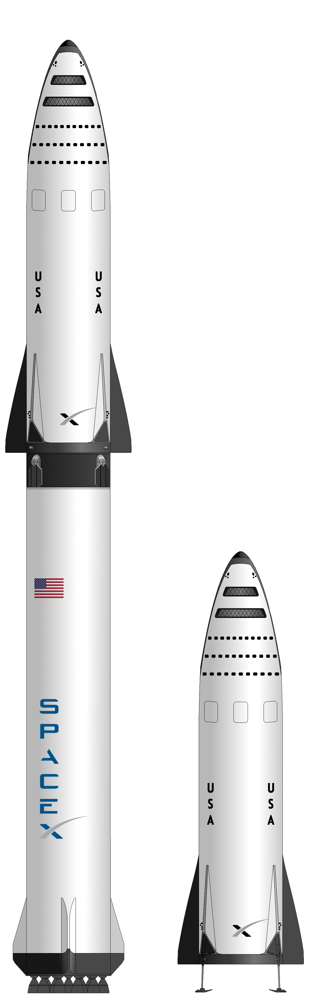

| The following page is under construction.
Please do not edit or alter this article in any way while this template is active. All unauthorized edits may be reverted on the admin's discretion. Propose any changes to the comment section. |
With the launch of the Space Age, a large scale colonization of Mars by the United States took place primarily between the early 21st century and early 22nd century. Public-private missions organized by the National Aeronautics and Space Administration (NASA) established research stations in areas around the Martian equator, creating a short-term settlements before transitioning to a Mars Corporation-led effort.
The Mars Corporation was established to head the Frontier Program, a fifty year architecture to terraform, colonize, and develop Mars for human civilization. NASA partnered with several private companies looking to establish a commercial presence on Mars to help finance the Frontier program. The Mars Corporation would go on to organize and lead the bulk of Frontier program missions, while NASA would have access to scientific stations.
Background[]
While proposals for human missions to Mars had existed since before the first rocket, the effort that directly led to human colonization was conceived in the private sector with the 2010s Space Boom. Efforts began in earnest with the development of the first generation of Starship super heavy space transportation systems. Proposed missions included ferrying crews to a Phobos station, Martian flyby, and eventual manned Mars landings. Meanwhile, NASA's funding for a super-heavy lifter stalled during the 2020s Artemis program, while scientific and astrodynamic data for a Mars mission far outweighed the work done in the private sector. Public-private partnerships had been reached for space station resupply, but as political pressure built, the alliance between NASA and the private sector became more formalized for a Mars mission.
Private sector projects[]
In January 2016, SpaceX CEO Elon Musk announced the SpaceX Mars Colony project to industry representatives at a series of space advocacy and industry conferences. Preliminary specifications were laid out for a spacecraft capable of carrying upwards of 100 individuals to Mars, and a reusable new super-heavy lifter. During the decade long Starship R&D program, dozens of corporations were formed and folded all in the hopes of taking advantage of mining, research, and infrastructure opportunities on Mars. Meanwhile, NASA performed its own in-house spacecraft design studies to determine the viability of the private sector missions.
Political pressure builds[]
In November 2020, Joe Biden was elected president after a campaign that promised American superiority over the Russian Federation in the fields of space exploration and missile defense. Privately, Biden was deeply concerned about the buildup in inexpensive anti-satellite weapons in Russia and China, and wanted to build up US military assets in space. The administration subsequently hosted the Conference for a New American Space Age to gain feedback from the aerospace industry on how to proceed with the space program for defense and exploration. During the conference, industry and NASA representatives submitted the idea of forming a public/private corporation to oversee long term development on Mars, investing in space propulsion and habitation research, and building up US launch capacity through NASA and the Space Force.
The Space Boom[]
Starships[]


SpaceX Interplanetary Transport System
In 2020 SpaceX began building and testing the first generation of Starships. It was the first combined launch vehicle and spacecraft designed to carry up to 100 colonists and astronauts from launch, to landing and return with minimal crew. It was the first spacecraft in history to be completely reusable, thus making it cheap enough for individuals to book passage to Mars. The success of SpaceX's Starship would drive rival companies to develop their own starships, all based around the fully reusable super heavy lifter and a spacecraft.
During the first two biennial launch windows, only a dozen Starships launched for Mars, with only one carrying an crew. By the third launch window 208 Starships were bound for Mars carrying over 5000 colonists. By the fourth window over 500 Starships were making regular flights to Mars. Growth in the number of Starship launches would continue, peaking in the late 2030s.
By the end of the 21st century, these entirely rocket propelled two-stage launch systems had largely been outmoded, however the term "Starship" is still used in common parlance to describe modern air-breathing single-stage launch vehicles.
NASA Expansion[]
Establishment of the Space Force[]
History[]
Early expeditions[]
Early colonies were governed by a station commander and seven-member council selected by NASA. Leadership problems were not uncommon. At Meridian Base, the first two leaders of the colony had varying degrees of success dealing with sickness, dust-storms, poor food and water supplies, and general discontent. Many colonists were ill-prepared to carve out a new settlement on a frontier. When Lionel Halvidar established the first settlement in Bradbury, he proved the strong leadership that the colony needed, and his example was later emulated at Meridian.
Early O'Neil Ships[]
In the 2040s the first O'Neil ships entered service, having been built with leftover materials from waterbed mining of asteroids. While comparatively small by modern ships, these early spacecraft represented an order magnitude increase in traffic to Mars, and were a critical component in the planet's early population boom prior to full colonization.
The first O'Neil ships were the first civilian interplanetary spacecraft built entirely in Martian orbit. At 500 m long, 50.2 m in diameter (at the propulsion stage), and a dry mass of 6000 tonnes, the were the largest vehicles ever built at the time of their launch, and were capable of transporting 2000 individuals between Earth and Mars per flight, on a 6 month trip at closest approach. While decidedly slower than other spacecraft of its day, it could transport by far the largest payloads in a pressurized volume, making it idea for cargo flights, or cultivating biomatter between destination points.
Founding MarsCorp[]
Post-war, asteroid mining beyond Mars saw a significant advancement through the introduction of Spore Mining, kicking off an economic boom on and around Mars. By the 2060s this led to a market panic over falling commodities prices due to oversupply. A majority of the orbital processing centers shut down as a result. This contributed to the earliest form of the Quantum Economic Model, in which the Mars Corporation had to employ an AI management system to keep the processing rate at pace with actual demand.
Frontier Program[]
Tier-1 Colonization[]
After the first NASA-led mission, MarsCorp began opening seats for purchase for private citizens and sending out commercial flights for individual settlers and associate-company programs. As colonization became the dominant aspect of flights to Mars, NASA's role in MarsCorp diminished.
Early Terraforming[]
While the initial development of Mars proved to be very successful, the long term goal of the Frontier Program was ultimately to establish a second home for humanity. Initially, this was a very esoteric goal, with no clear path outlined to practically achieve it beyond continually establishing commercial bases. It wasn't until the Bradbury working group began pushing for geo-engineering efforts that terraforming was seriously considered.
The terraforming effort was being planned throughout the course of the Frontier Program's early days by factions within the Mars Corporation, but never seriously advocated. The new Luddite movement that arose in response to The Flood, blamed human meddling for the loss of the Ice Caps and opposed directed efforts on Mars, and in turn drove NASA to bury any public support for Terraforming. Pressure from the Bradbury colonies pushed the other members of MarsCorp to more strongly advocate for an aggressive terraforming campaign in 2029. Over the course of the next five years, MarsCorp in concert with its assoicate members of the space mining industry, launched a series of missions to the Asteroid belt and constructed a battery of facilities on the surface of Mars for terraforming purposes. The first of these facilities was the Green Magnetoshield, a 2 Tesla magnetic field generator stationed at Mars-Sol L1, shielding the planet from solar winds and radiation. The magnetoshield program was initially put forth not as a terraforming program, but as a solution to long term safety for astronauts on surface operations, but within the first year of its operation surface pressures and temperatures began to steadily rise as CO2 from the poles was no longer being swept away by solar winds.
Genetically modified terraforming agents were dispersed across the planet to begin bio-leeching CFC and other atmosphere buffers, as well as consolidating salts and building up a soil-base. In 2033 Lunar Energy Ltd. deployed the first Mars Solar Mirrors, massive reflective spacecraft that would reflect the sun's radiation across the planet's surface. These ships, the Apollo, the Freyr, the Garuda, the Lugh, the Helios, the Amaterasu, and the Ra were constructed out of next generation nanoprinters on Luna, and would later support the Refreeze project on Earth. With the mirrors and the terraforming agents working in harmony, Mars's atmosphere began to build up and the temperature of the planet began to rise.
Bio-seeding[]
While the geo-engineering projects were still underway, humanity began the decades long process of giving Mars a sustainable biosphere. While most of the primordial Martian life was cloned to return to the new seas, most of the life was brought in from Earth and genetically engineered to most effectively balance the biosphere. Mars was the first planet where the ecology was largely artificial, and tailored not just for the terrain, but to best suit the humans who would come to inhabit the planet in mass.
Bacteria test chambers across the planet were opened to improve the soil base when the first mirrors constructed by Lunar Energy Ltd. were permitted to begin surfacing heating. By 2030 the icy and carbon rich asteroids were deorbited on long re-entry paths into the atmosphere releasing huge amounts of heat energy or blanketing the poles with a black soot. Disposable drones were automatically produced and dispersed GM bacteria and lichens across the surface to take advantage and further spur these conditions. These organisms, spread across the planet's surface processing the toxic dust into a usable soil base and extracting greenhouse gasses from the soil. When a given condition of these organisms would be met (O3 levels rising to a certain point, the selenium content of the soil, etc.) a fail-safe in their genome would trigger their demise, depositing more vitamins into the new soil base.
Once the planet became warm enough to support liquid water on the surface, genetically modified strains of lichens, and algae were introduced into and around the newly formed oceans, rivers, and seas. These tough creatures had very short life spans, but spread and reproduced rather quickly. Both organisms were engineered to increase oxygen production, but specific strains were engineered to process the perchlorate salts in and around these bodies into either useful soil additives like Magnesium and Calcium, or into sodium salts and sources of Ozone. Once CO2 levels dropped sufficiently in an area the basic oraganisms would no longer reproduce as vigorously and more advanced life could be seeded. Once temperatures reached high enough levels, moss, small brush and ferns, and corals were seeded, ramping up oxygen production. The whole process only took about a decade due to human intervention and the genetically modified nature of the flora.